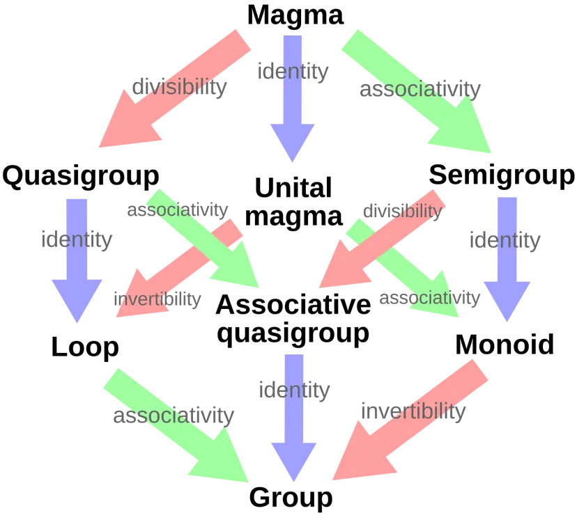

데이터의 분포(패턴)를 찾아서 의미있는 결론을 도출 -> 통계의 목표
수학 : 추상적인 개념을 탐구하고 논리적으로 확장하는 것 - 함수, 대수, 위상 수학
컴퓨터 공학 : 구체적인 연산과 시스템을 설계하는 것 - 알고리즘, 데이터 구조, 컴파일러
즉, 수학은 주로 추상적 사고를 기반으로 발전하며, 컴퓨터 과학은 이를 구체적 구현으로 변환하는 역할을 함.
따라서, 수학을 아는 것이 중요
수학적 사고의 세 단계
수학적 사고에서 가장 중요한 개념, 즉 수학적 대상은
수학에서 다루는 주요 대상들은 집합의 형태로 정의되잠ㄴ 단순한 원소들의 모임이기 때문에, 원소들 사이에 관계나 연산이 존재하지 않는 무질서한 상태이다.
여기에 연산과 성질(두 원소를 받아 새로운 원소를 반호나하는 규칙)을 추가하면 수학적 구조 가 형성된다.
$$수학적 구조 = (집합, 연산, 공리)$$
즉, 집합에 특정한 연산을 추가하고, 이 연산이 만족해야한 공리(무조건 지켜야하는 조건 혹은 명제)를 설정하면 구조가 정의 된다.
예를 들어,
- 집합 + 이항연산(덧셈, 곱셈) => 대수구조
튜플로도 표현할 수 있다.
$$(V,+,\cdot)$$집합 + 연산(벡터 덧셈, 스칼라 곱) + 공리(8개)로 이루어진 수학적 구조이다.More into 대수구조 
마그마(Magma)
반군(Semigroup)
모노이드(Monoid)
군(Group)
환(Ring)
채(field)
예시를 들어보면 다음과 같다. $$ \begin{gathered} (\mathbb{Z},+)=G ? \text{ => 정수 집합 Z에 덧셈 연산을 정의하면 아벨 군이 된다.}\ (\mathbb{Z}, \times) \neq G \text{ => 정수 집합 Z에 곱셈 연산을 정의하면 군을 이루지 못한다.} \ (\mathbb{Q}, \times)=G \text{ => 유리수 집합 Q에서 곱셈를 정의하면 군을 이룬다.} \ (\mathbb{Z},+, \times)=R \text{ => 정수에 덧셈과 곱셈 연산이 함께 정의 되면 환이 된다.}\ (\mathbb{Q},+, \times),(\mathbb{R},+, \times),(\mathbb{C},+, \times)=F \text{=> 유리수, 실수, 복소수 집합에서 덧셈과 곱셈을 함계 고려하면 체가 된다. } \end{gathered} $$
why?
다시 벡터공간으로 돌아가보면, 벡터 공간은 벡터 공간은 집합 + 연산(벡터 덧셈, 스칼라 곱) + 공리(8개)로 이루어진 수학적 구조인데,
이를 다시 구체적으로 정의해보면 다음과 같다.
$$
\begin{gathered}
+: V \times V \to V, \quad \text{(벡터 덧셈)} \
\cdot: F \times V \to V, \quad \text{(스칼라 곱)} \
(V, F, +, \cdot) = \operatorname{Module}(\text{Ring}) \
\text{where } V \text{ is a vector space, and } F \text{ is a field (e.g., } \mathbb{R}, \mathbb{C} \text{).}
\end{gathered}
$$
근데 왜 벡터 공간은 공간이라고 부를까?
수학적 공간이란?
그러면 벡터공간이 내적 공간이 될려면 어떠한 연산이 추가되는 것일까?
Conjugate Symmetry (켤레 대칭성)
Linearity in the First Argument (첫 번째 변수에 대한 선형성)
Positive Definiteness (양의 정부호성)
Homogeneity in the First Argument (첫 번째 변수에 대한 동질성, 균질성)
벡터 공간의 확장
벡터 공간 -> 길이, 거리 개념이 없음
=> 내적을 추가 => 내적 공간 -> 내적을 추가하여 각도, 투영, 직교를 정의할 수 있음
=> 내적으로부터 놈을 정의 => 놈 공간 -> 내적으로부터 벡터의 길이(norm)을 정의할 수 있음
=> 놈으로부터 거리를 정의 => 거리 공간 -> norm을 통해 벡터 간의 거리 개념을 정의할 수 있음
=> 거리로부터 열린 집합을 정의 => 위상 공간 -> 거리 기반으로 열린 집합을 정의하여 위상을 형성할 수 있음...? -> 이해 부족
벡터 공간을 정의할때 차원이란 무엇일까?
벡터 공간을 생성(Span)하는 선형 독립인 벡터들의 집합(기저, Basis)의 원소 개수
이는 벡터 공간의 기본 구조를 결정하는 중요한 속성이다.
그렇다면 차원을 정의할때 기저란 무엇일까?
$$ c_1 v_1+c_2 v_2+\cdots+c_m v_m=0 $$
을 만족하는 스칼라 $c_1, c_2, \ldots, c_m \in F$ 가 존재할 때,
$$ c_1=c_2=\cdots=c_m=0 $$ 이어야 한다. 즉, 기저의 원소들은 서로 종속되지 않고 독립적인 방향을 가진다.
기저 $B$ 는 벡터 공간 $V$ 의 생성 집합(Spanning Set)이어야 한다. 즉, 임의의 벡터 $v \in V$ 는 기저 $B$ 의 유한한 선형 결합(Linear Combination)으로 표현할 수 있어야 한다.
즉, 임의의 벡터 $v \in V$ 에 대해, 적절한 스칼라 $a_1, a_2, \ldots, a_n \in F$ 와 벡터 $v_1, v_2, \ldots, v_n \in B$ 가 존재하여
$$ v=a_1 v_1+a_2 v_2+\cdots+a_n v_n $$ 즉, 기저 벡터들을 독립적인 방향을 지녀야한다.
수학에서 말하는 벡터공간의 차원과 numpy에서 말하는 차원에는 무슨 차이가 있을까?